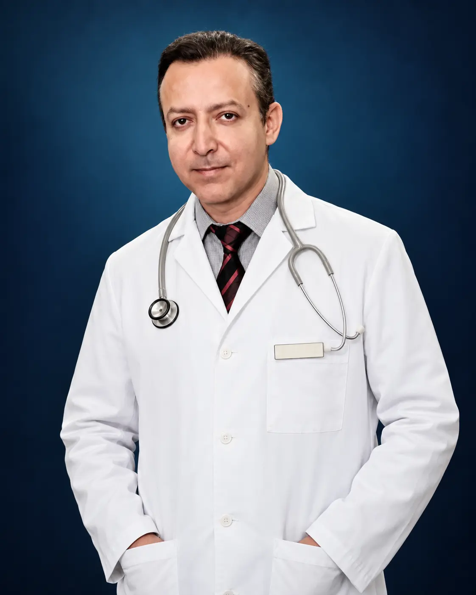

Precise diagnosis
Care begins with understanding the source and pattern of pain.

“The best care begins by listening to the life pain has interrupted.”
Board-certified in Physical Medicine & Rehabilitation, with a deeply personal approach to spine, joint, and chronic pain care.
Dr. Cyrus Sedaghat is a board-certified Physical Medicine & Rehabilitation physician recognized for interventional pain procedures, spine care, and chronic pain treatment.
He treats back pain, neck pain, joint pain, and complex nerve conditions with a focus on understanding the whole patient. Each plan is designed to relieve pain, restore function, and help patients return to the parts of life that matter most.
His approach combines advanced clinical care with clear explanations and an unhurried doctor–patient relationship.
American Board of Physical Medicine & Rehabilitation
Spine, joints, regenerative therapies, and chronic pain
Serving Irvine and the wider Orange County community

Dr. Sedaghat completed his internship in Internal Medicine and a three-year residency in Physical Medicine and Rehabilitation at Loma Linda University Medical Center.
His training established a strong foundation in musculoskeletal medicine, followed by advanced development in interventional procedures.
Recognition for clinical excellence delivered with compassion.
Our Irvine clinic combines interventional pain medicine, regenerative options, and personalized rehabilitation planning.
Care begins with understanding the source and pattern of pain.
From image-guided procedures to PRP and PRF therapies.
Time to ask questions and make informed decisions together.